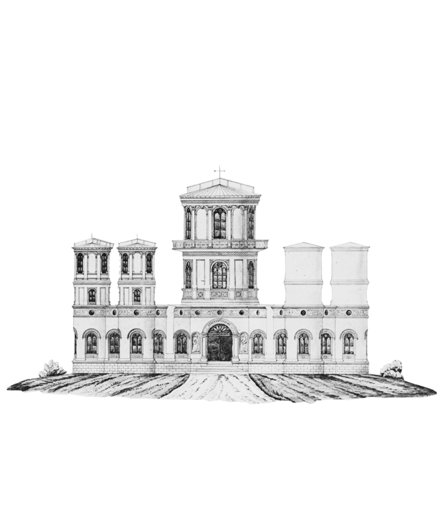
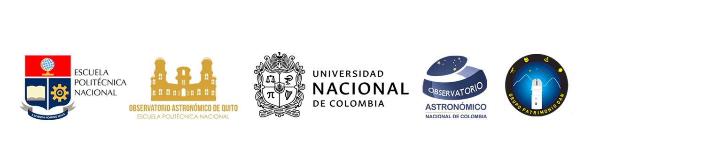

WEBINAR
FORO BINACIONAL CIENCIA Y PATRIMONIO
Colombia - Ecuador
4 y 5 DIC. 2024
FORO BINACIONAL CIENCIA Y PATRIMONIO
Colombia - Ecuador
4 y 5 DIC. 2024
Uniendo esfuerzos para fomentar la colaboración científica
y la difusión de los acervos patrimoniales y astronómicos en la región.
y la difusión de los acervos patrimoniales y astronómicos en la región.
Observatorio Astronómico |
Nacional de Colombia |
Nacional de Colombia |
| Observatorio Astronómico
| de Quito
| de Quito

Encuentro de Historia y Ciencia
En este evento especial, el Observatorio Astronómico Nacional de Colombia y el Observatorio Astronómico de Quito se unen en una colaboración para resaltar la rica historia y el invaluable patrimonio científico de ambas instituciones. Con una trayectoria centenaria, estos observatorios no solo han sido testigos del avance científico en la región, sino también guardianes de un legado que continúa inspirando generaciones en el ámbito de la astronomía y las ciencias espaciales. El encuentro busca destacar los puntos comunes y el impacto histórico que estos dos observatorios han tenido en el desarrollo de la ciencia en América Latina, fomentando un diálogo sobre su influencia en la educación, el conocimiento del cosmos y el fortalecimiento de la investigación científica. La agenda incluirá presentaciones sobre sus principales logros, colecciones patrimoniales, descubrimientos y los retos que han superado a lo largo de los años. Este evento será una oportunidad única para el público, investigadores y académicos interesados en comprender y apreciar el valor histórico de estos observatorios, así como para reforzar los lazos entre ambas naciones en la promoción y preservación de la ciencia y la historia astronómica, ofreciendo una plataforma para compartir investigaciones, descubrimientos y experiencias, promoviendo el intercambio de ideas entre astronomía y cultura.
¡Te esperamos para ser parte de este evento histórico!
Objetivos y Estructura
OBJETIVOS:
1. Fomentar la colaboración: Establecer un lazo entre ambos observatorios para proyectos futuros.
2. Difundir conocimientos: Compartir hallazgos recientes, historias comunes, y técnicas de conservación y museografía para las colecciones de ambas instituciones.
3. Formación de públicos: Invitar a estudiantes y entusiastas de la astronomía y el patrimonio a participar con preguntas e intervenciones durante el Webinar.
ESTRUCTURA:
● Jornada Día 1 - Foro/Conversatorio: 3 Investigadores de cada observatorio compartirán en 30 minutos sus experiencias e investigaciones relacionadas a los Observatorios, con espacio de 20 minutos para intervención del público y preguntas a los investigadores.
● Jornada Día 2 - Foro/Conversatorio: 3 Investigadores de cada observatorio compartirán en 30 minutos sus experiencias e investigaciones relacionadas a los Observatorios, con espacio de 20 minutos para intervención del público y preguntas a los investigadores.
PONENTES INVITADOS
CLARA HELENA Sánchez
Matemática de la Universidad Nacional de Colombia, donde también obtuvo su Maestría en Ciencias y su Doctorado en Lógica y Filosofía de la Ciencia en UNICAMP, Brasil. Durante casi 47 años, se desempeñó como Profesora Titular en el Departamento de Matemáticas de la UN. Sus áreas de interés abarcan los fundamentos de las matemáticas, la lógica informal y la historia y filosofía de esta disciplina.
Es integrante de grupos de investigación como PROCLO, dedicado a la historia de las matemáticas en Colombia, y la Cátedra de Pensamiento Colombiano, enfocada en el estudio interdisciplinario del pensamiento nacional. Ha contribuido en la Colección Sesquicentenario de la Universidad Nacional y dirigido numerosos trabajos de grado. Es miembro del Grupo de Patrimonio del Observatorio Astronómico Nacional de Colombia. En reconocimiento a su trayectoria, recibió la Orden Gerardo Molina en 2008, la máxima distinción para profesores de la UN. Además, es miembro de la Sociedad Colombiana de Matemáticas, la Academia Colombiana de Ciencias Exactas, Físicas y Naturales, y la Academia Colombiana de Historia de la Ingeniería y las Obras Públicas.
FRANCISCO Carvajal
El Lcdo. Carvajal cuenta con una formación destacada, siendo graduado en Turismo Histórico Cultural en la Universidad Central del Ecuador. Asimismo, ha completado la Especialización Superior en Museos y Patrimonio Histórico, en la Universidad Andina Simón Bolívar Sede - Ecuador. Magister en Museología con especialización en Gestión del Patrimonio Cultural de la Universidad Andina Simón Bolívar. En el ámbito laboral, se destaca como mediador educativo de la Unidad de Divulgación científica del Observatorio Astronómico de Quito.
SANTIAGO Vargas Domínguez
Físico de la Universidad de los Andes (Colombia), MSc y PhD en Astrofísica del Instituto de Astrofísica de Canarias (España), tiene experiencia posdoctoral en el Dutch Open Telescope de la Universidad de Utrecht (Holanda), Mullard Space Science Laboratory - University College London (Reino Unido), Universidad de Los Andes (Colombia), y Big Bear Solar Observatory (EEUU). Actualmente es Profesor Asociado de la Universidad Nacional de Colombia (UNAL), donde ha sido Coordinador de investigación del Observatorio Astronómico Nacional (OAN). Como miembro del Grupo de Astronomía, Astrofísica y Cosmología del OAN, lidera la línea de investigación en Astrofísica Solar, y es miembro del Grupo de Patrimonio del OAN.
En la UNAL ha sido Jefe de la División de Extensión de la Sede Bogotá y Coordinador de Divulgación Científica de la Facultad de Ciencias. Es miembro de varias sociedades académicas entre las que se destacan: Royal Astronomical Society, American Astronomical Society, European Astronomical Society, National Space Society Colombia y la International Astronomical Union.
DAYSI Quinatoa
Analista de Astronomía del Observatorio Astronómico de Quito Estudiante de doctorado en Astrofísica Instituto de Física y Astronomía, Facultad de Ciencias, Universidad de Valparaíso. Realizó el pregrado en Física en la Escuela Politécnica Nacional. Interés en la formación y evolución de galaxias, así como en la diversidad inclusión y la difusión de la astronomía.

MARÍA DEL PILAR López Pérez
Actualmente es profesora asociada e investigadora en el Instituto de Investigaciones Estéticas de la Facultad de Artes. Arquitecta centrada en investigaciones sobre historia de la arquitectura y del arte hispanoamericano de los siglos XVI al XVIII, con una orientación hacia la historia de la cultura material y la vida cotidiana.
Los aspectos relacionados con las formas del trabajo artístico e industrial, temas de género vinculados con el uso de los objetos, los ámbitos domésticos en diferentes momentos de la historia, el patrimonio material e inmaterial y sus múltiples conexiones son, entre otros, campos de interés y de investigación.
Forma parte del grupo de profesores de la Maestría en Conservación del Patrimonio Cultural Inmueble y del grupo de investigación Estudios históricos artísticos de los bienes culturales.
DARWIN Jaramillo
El Lcdo. Jaramillo se graduó de la carrera de Ecoturismo y Biodiversidad, de la Universidad Central del Ecuador, además culminó su licenciatura en Turismo Histórico Cultural en esta misma casa de estudios, tiene una Especialidad de alta montaña y en la actualidad trabaja en el Área de gestión cultural del Observatorio Astronómico.
Programa del Foro
PRIMERA JORNADA: 4 DE DICIEMBRE
Bienvenida e introducción
16:00 - 16:40 (UTC-5) - La asombrosa historia del Observatorio Astronómico Nacional de Colombia. Una cronología 1802-1920
Ponente: Clara Helena Sánchez.
Una revisión de los hitos históricos y la evolución científica del Observatorio Astronómico Nacional de Colombia, destacando su papel en el desarrollo de la astronomía en el país.
16:40 - 17:20 (UTC-5) - Historia del Observatorio Astronómico de Quito y la Escuela Politécnica Nacional de Ecuador
Ponente: Francisco Carvajal
Exploración de los proyectos actuales y los desafíos que enfrenta el Observatorio de Quito, con un enfoque en su rol en la investigación astronómica en la región andina.
17:20 - 18:00 (UTC-5) - El último siglo en el Observatorio Astronómico Nacional de Colombia
Ponente: Santiago Vargas Domínguez
Una mirada a la colección patrimonial del Observatorio, incluyendo instrumentos históricos y su contribución al conocimiento científico y cultural de Colombia.
SEGUNDA JORNADA: 5 DE DICIEMBRE
Bienvenida
16:00 - 16:45 (UTC-5) - Actividad Científica Observatorio Astronómico de Quito
Ponente: Daysi Quinatoa
Presentación sobre la influencia del Observatorio de Quito en la educación científica y la divulgación astronómica en Ecuador, desde su fundación hasta el presente.
16:40 - 17:20 (UTC-5) - El Edificio y las colecciones del Observatorio Astronómico Nacional de Colombia
Ponente: Maria del Pilar López
Presentación aspectos relacionados con la arquitectura y colecciones del Observatorio Astronómico Nacional de Colombia
17:20 - 18:00 (UTC-5) - El Edificio y las colecciones del Observatorio Astronómico de Quito
Ponente: Darwin Jaramillo
Presentación aspectos relacionados con la edificación del Observatorio Astronómico de Quito.

PATRIMONIO
HISTÓRICO, CIENTÍFICO Y CULTURAL
OAN-OAQ
HISTÓRICO, CIENTÍFICO Y CULTURAL
OAN-OAQ